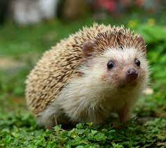

Descripción
Los erizos son pequeños mamíferos cubiertos de púas; pertenecen al orden Eulipotyphla, aunque antiguamente eran considerados del orden Insectívoro, hoy en día obsoleto. Hay un total de dieciséis especies de erizos divididas en cinco géneros; el único erizo que no pertenece a esos géneros es el erizo gigante o también conocido como Erethizontidae.
Por lo general son mamiferos muy territoriales.
Los erizos habitan en Europa, Asia y África, también han sido introducidos en América, Nueva Zelanda y Australia, pero no hay erizos endémicos en Oceanía ni en América. En España viven dos especies: el erizo europeo y el erizo moruno, pero en cautividad es muy frecuente el erizo orejudo. Los erizos no han cambiado mucho durante los últimos quince millones de años. Como muchos de los primeros mamíferos, han adoptado una vida principalmente nocturna y una alimentación insectívora.
